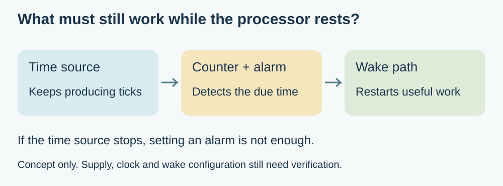
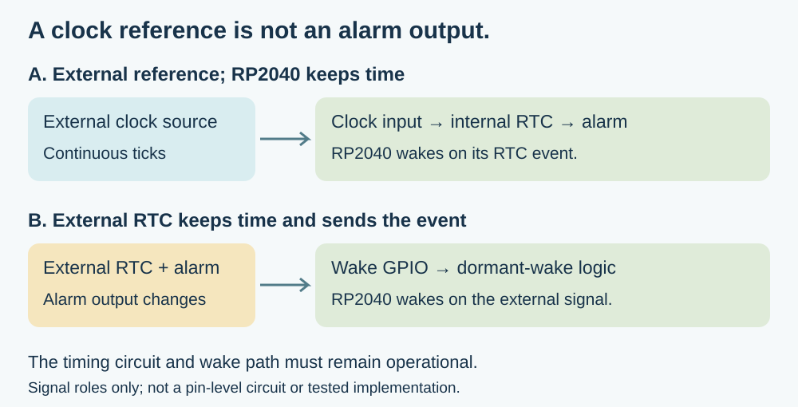

Your battery display only needs a new reading every few minutes. Sleeping between updates sounds straightforward: set a timer, stop the processor and wake when the interval ends. But if the chosen sleep mode also stops the clock that measures the interval, the timer cannot finish its job.
For a team building a periodic sensor, an e-paper display or a scheduled installation, this is a hardware decision as well as a software setting. Something must remain able to measure time and deliver a wake event. Establish that path before assuming a lower-power mode will preserve the behaviour of the desk prototype.
The RP2040 gives a useful example: its sleep and dormant modes have different clock requirements. This article follows that distinction; it does not claim that every command called “deep sleep” selects the same hardware state on every board.

Start with what must remain running
A clock in this context is a repeating electrical signal, not the date displayed on a screen. The RTC, or real-time clock peripheral, counts that signal to advance its time. Configuring an alarm tells it what time to match; it does not create an independent source of ticks.
The RP2040 datasheet, section 4.8.5.5, describes keeping the RTC clock and wake logic active in sleep mode. For dormant operation using the internal RTC alarm, the reference must instead come from outside the chip through a GPIO clock input.
The same subsection describes moving execution away from the phase-locked loops, stopping those loops and preparing the alarm before entering dormant mode. These are clock-system responsibilities, not a generic Python recipe. This article contains no measured wake sequence, and it should not be read as proof that an arbitrary MicroPython build implements that whole sequence.
Two external signals can do different jobs
One arrangement supplies a continuing clock signal to the RP2040's internal RTC. That RTC still keeps the time and decides when its alarm should wake the chip. The external source must remain powered and suitable for the clock input throughout the waiting period.
A different arrangement gives an external RTC the entire timing job. When its alarm occurs, it changes an output connected to a suitable processor wake input. In this arrangement the external device sends the event; it does not need to feed a continuous reference into the RP2040's internal RTC. Reading an external RTC over I2C alone does not provide that physical wake connection.
The choice changes the wiring, software and power budget. In either case, identify the signal, its voltage levels and its behaviour while the main processor rests. A board that successfully returns the date over I2C has passed a communication check, not a dormant-wake test.

Learn from a working example without inheriting its assumptions
In a July 26, 2021 project write-up, ghubcoder describes a Pico waking from a DS3231 alarm output connected to a GPIO. The code clears the alarm flag and restores the system clocks after waking. That is a useful illustration of the external-alarm arrangement, distinct from supplying the internal RTC with a clock.
The author also encountered an integration problem when changing how the RTC module was powered: its pull-up network affected communication and the alarm line. The article describes modifications to that particular module. Do not apply those modifications blindly to another board; obtain its circuit and check the intended power arrangement. Nor should the project's estimated battery life be treated as a result for your assembled product.
Software naming deserves the same care. Adafruit's RP2040 CircuitPython sleep guide, whose page was last edited May 28, 2025, explains how timed wake changes the available sleep behaviour on that platform. This supports checking the implementation behind the API. Its examples and consumption figures do not establish the behaviour of a different MicroPython firmware or a different board.
Test the clock path, then the complete cycle
First confirm that the chosen time source continues running in the intended resting state. Next confirm that its alarm or wake signal reaches the processor. Finally, confirm that the resumed application produces the next useful reading or display update. Keeping these observations separate helps locate a fault without treating every missed update as a broken sensor.
Run repeated cycles using the product's intended supply arrangement. Include the external timing device and its supporting circuit in the power measurement. Check that the alarm is acknowledged or rearmed appropriately and that the next waiting interval behaves as intended. One successful wake does not establish a repeatable scheduler.
Also define what should happen if power is lost or the time becomes invalid. A fixed elapsed interval and a calendar appointment are different requirements: “take another sample in five minutes” is not identical to “act at 09:00 local time.” An RTC and a wake input supply mechanisms; the application still needs the scheduling policy.
Choose the next board revision with evidence
For an early prototype, a mode that keeps the required timing path alive may be an appropriate starting point. If the measured whole-device energy use does not meet the requirement, compare an external clock or external alarm arrangement with the additional circuitry and firmware it needs. No option is automatically better merely because its sleep state has a more impressive name.
Before changing the PCB, ask for the selected power state, the circuit that keeps time, the wake signal and a repeated-cycle result. Those four items connect the battery target to something the team can actually test.
If your display or sensor must wake itself periodically, discuss its timing and power requirements with Anvol. Bring the board and firmware versions, intended update interval and a complete-cycle power trace if available. They help decide whether the next change belongs in the firmware, the clock circuit or the surrounding board.
Both figures here are new explanatory illustrations. The linked DS3231 project is third-party work; no additional hardware, battery-life or wake-reliability test was performed for this article. Sources checked October 10, 2026.